HYD · 실습 가이드Cypher로 그래프를 생성·조회·수정·삭제하고 설비 관계 탐색하기
Cypher 쿼리를 Neo4j Browser에서 직접 돌려 봅니다. 예제 DB에 노드와 관계를 만들고, 찾고, 고치고, 지운 다음, 처음부터 들어 있던 설비 데이터에서 관계를 한 번, 두 번 건너 답을 꺼내고 그 답이 맞는지 원래 행과 맞춰 봅니다. 줄기 단계 가운데 온톨로지 단계입니다.
01 예제 준비하고 연결하기
먼저 Docker Desktop을 켭니다. 이 실습의 DB가 Docker에서 돌아갑니다.
명령과 쿼리는 칸 아래의 복사 단추로 붙여 넣으세요. 손으로 옮기면 따옴표 하나만 빠져도 돌지 않습니다. 같은 쿼리가 차례대로 실습 폴더의 기본문법_연습.cypher에도 들어 있습니다.
클래스룸 02회차 실습 자료에서 받은 ZIP의 압축을 풀고, 풀린 02회차/랩/02일차_실습1_관계조회 폴더를 파일 탐색기로 엽니다. 주소 표시줄에 powershell을 넣고 Enter를 누르면 그 폴더에서 PowerShell이 열립니다.
 실습 폴더 주소 표시줄에 powershell을 넣은 모습 · 누르면 크게 보기
실습 폴더 주소 표시줄에 powershell을 넣은 모습 · 누르면 크게 보기두 명령을 차례로 실행하세요.
PowerShell · 이 실습 폴더
python prepare_example.py
예제 준비 완료: 노드 20개 · 관계 19개가 나옵니다.
PowerShell · 이 실습 폴더
python lab_db.py
랩 DB 준비 완료와 Connect URL 주소가 나오고, 브라우저에 Neo4j Browser의 연결 창이 열립니다.
 두 명령의 출력. 포트 번호는 PC마다 다릅니다 · 누르면 크게 보기
두 명령의 출력. 포트 번호는 PC마다 다릅니다 · 누르면 크게 보기연결 창의 주소와 사용자 이름은 이미 채워져 있습니다. Password는 비워 둔 채 Connect를 누르세요.
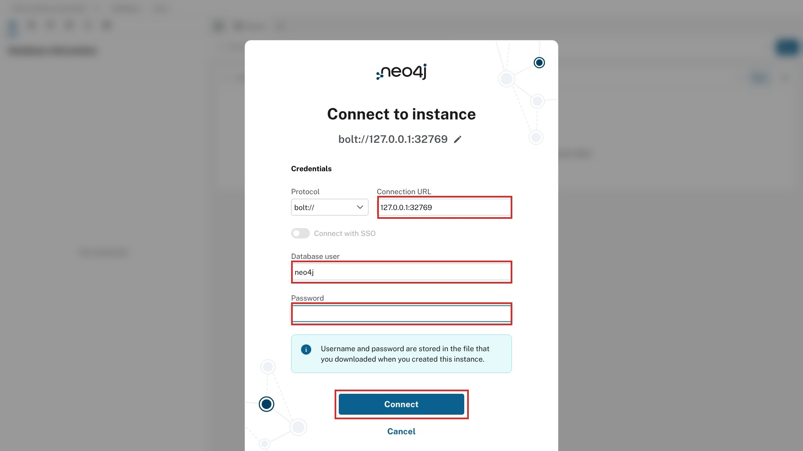
채워진 주소 · 사용자 칸, 빈 Password 칸과 Connect 단추 · 누르면 크게 보기새 기능 안내 창(Work in tabs)이 뜨면 Dismiss로 닫습니다.
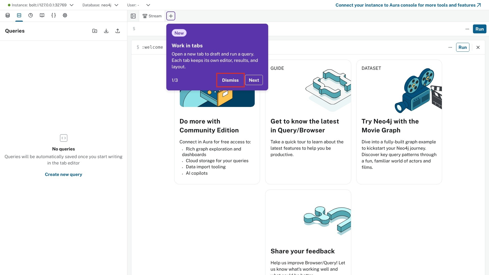
Work in tabs 안내 창의 Dismiss 단추 · 누르면 크게 보기맨 위 Instance 주소의 끝 숫자가 PowerShell의 Connect URL 끝 숫자와 같은지 봅니다. 같으면 방금 띄운 예제 DB에 붙은 것입니다. 포털의 지식 지도가 담긴 DB는 주소가 다른 DB라서, 여기서 무엇을 만들고 지워도 포털의 지식은 바뀌지 않습니다.
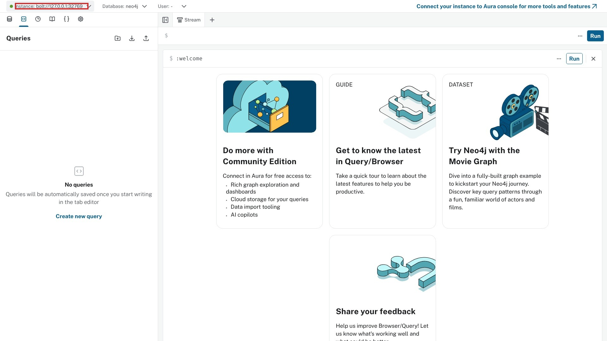
맨 위 Instance 주소의 끝 숫자 · 누르면 크게 보기왼쪽 맨 위의 원통 모양 단추를 누르면 이 DB에 무엇이 들어 있는지 나옵니다. 색깔 단추가 레이블, 그 아래가 관계 유형, 맨 아래가 속성 이름입니다.
Nodes (20), Relationships (19)가 나옵니다.
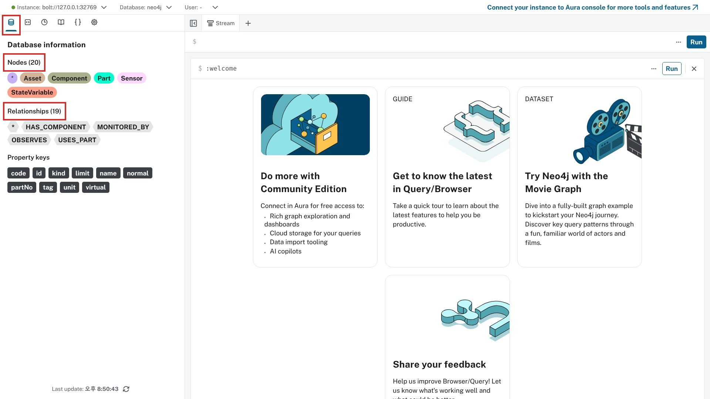
원통 모양 단추와 Nodes (20) · Relationships (19) · 누르면 크게 보기Stream 바로 왼쪽 단추로 이 패널을 접어 결과 자리를 넓힙니다.
Stream 왼쪽의 패널 접기 단추 · 누르면 크게 보기02 노드 만들기: CREATE
아래 칸을 복사해 맨 위 입력칸에 붙여 넣습니다. CREATE는 적은 모양대로 노드를 새로 만드는 절입니다.
Neo4j Browser 입력 칸
CREATE (:PracticeDevice {id:'basic-A', name:'연습 펌프', score:40}),
(:PracticeDevice {id:'basic-B', name:'연습 팬', score:70});
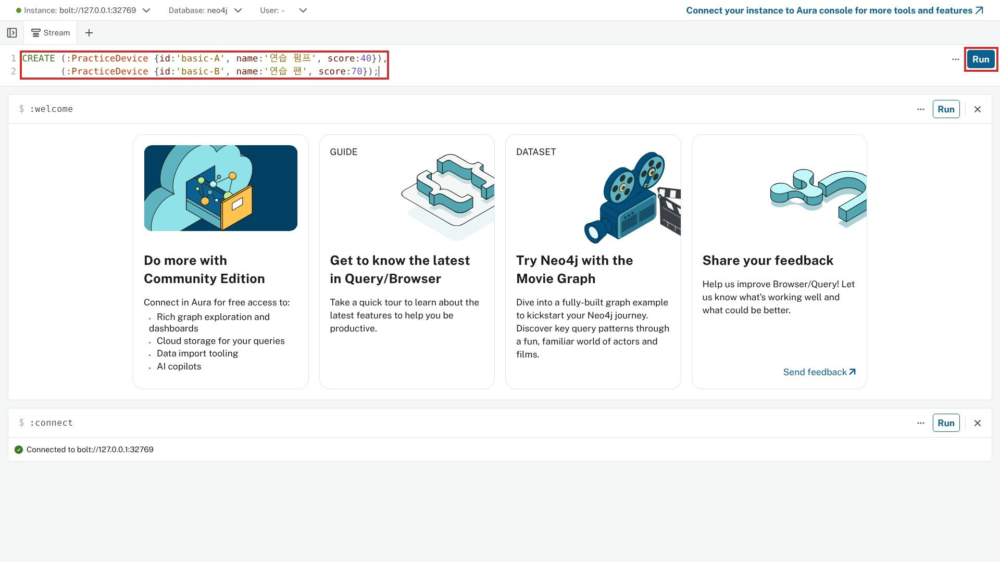
맨 위 입력칸에 붙여 넣은 CREATE 쿼리와 오른쪽 끝의 Run · 누르면 크게 보기입력칸 오른쪽 끝의 Run을 한 번만 누르세요. 다시 누르면 같은 노드가 둘 더 생깁니다.
Created 2 nodes, set 6 properties, added 2 labels가 나옵니다.
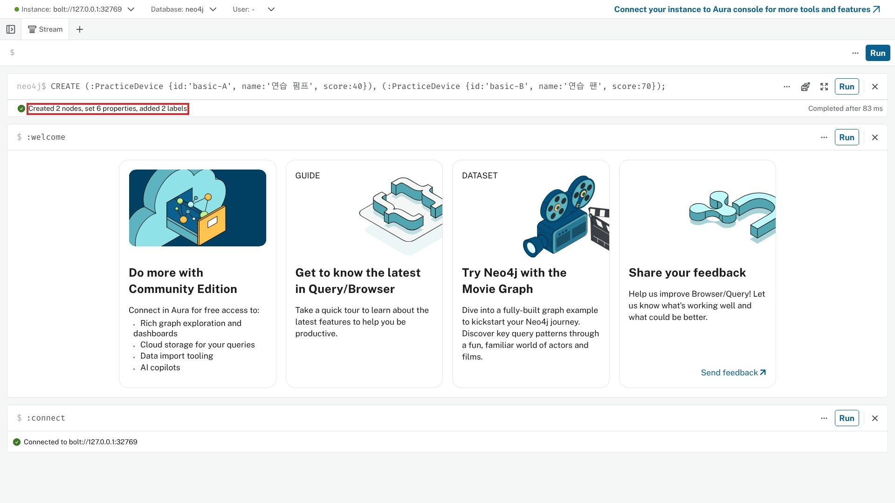
결과 아래 글 Created 2 nodes · 누르면 크게 보기03 찾아서 돌려받기: MATCH · RETURN
만든 노드를 찾아 돌려받습니다. 쿼리는 늘 입력칸 오른쪽 끝의 Run으로 돌립니다. 결과마다 붙은 Run은 그 쿼리를 한 번 더 돌리는 단추라, 잘못 누르면 앞의 CREATE가 또 돌아갑니다.
Neo4j Browser 입력 칸
MATCH (n:PracticeDevice)
RETURN n;
원 둘(연습 펌프 · 연습 팬)이 그려지고 선은 없습니다.
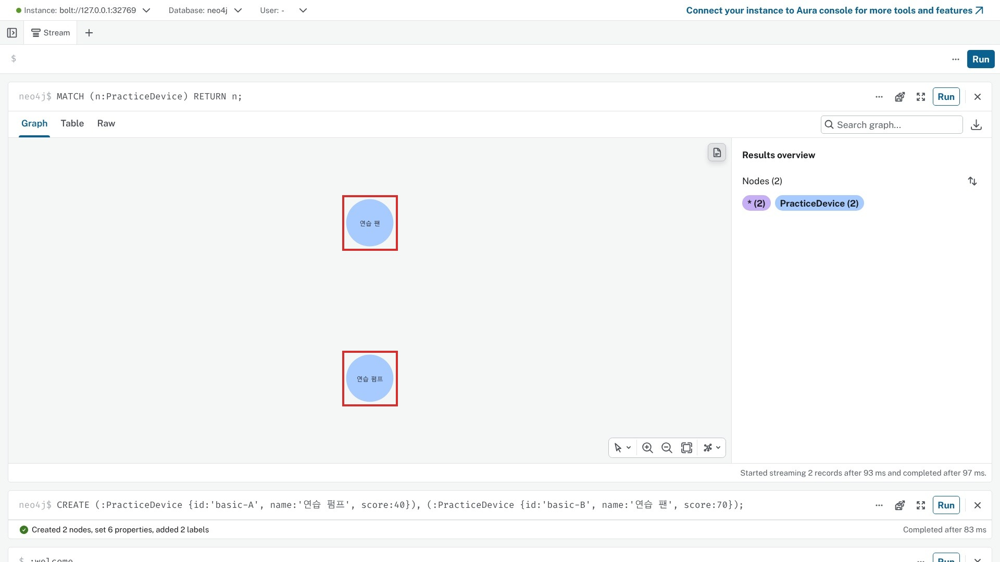
원 둘, 선 없음 · 누르면 크게 보기원 연습 펌프를 누르면 오른쪽에 그 노드의 레이블과 속성이 나옵니다.
PracticeDevice 이름표 아래 id basic-A, name 연습 펌프, score 40이 있습니다. 맨 윗줄 <id>는 Neo4j가 노드마다 매기는 번호라 쿼리에 적은 id와 다릅니다.
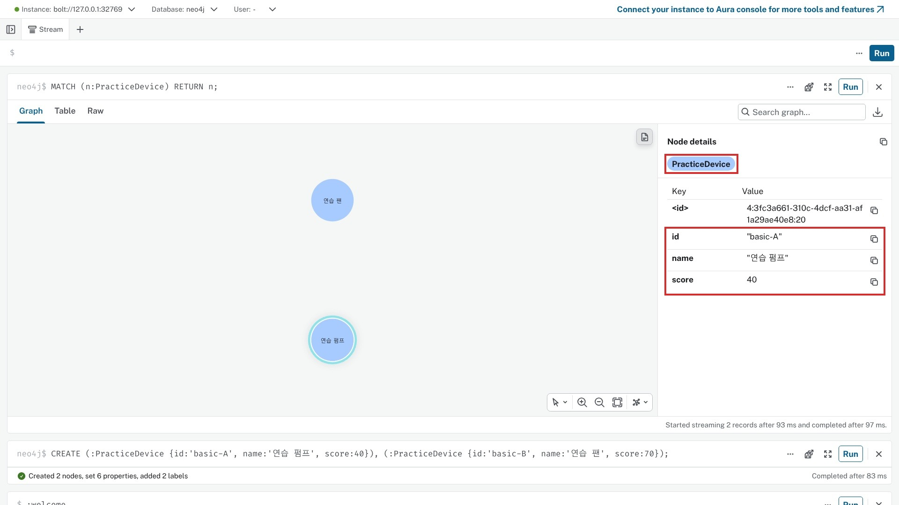
연습 펌프를 누른 뒤 오른쪽 Node details · 누르면 크게 보기결과 왼쪽의 Table을 누르면 같은 결과가 표로 바뀝니다. 찾은 노드 하나가 한 행입니다. Graph를 누르면 그림으로 돌아옵니다.
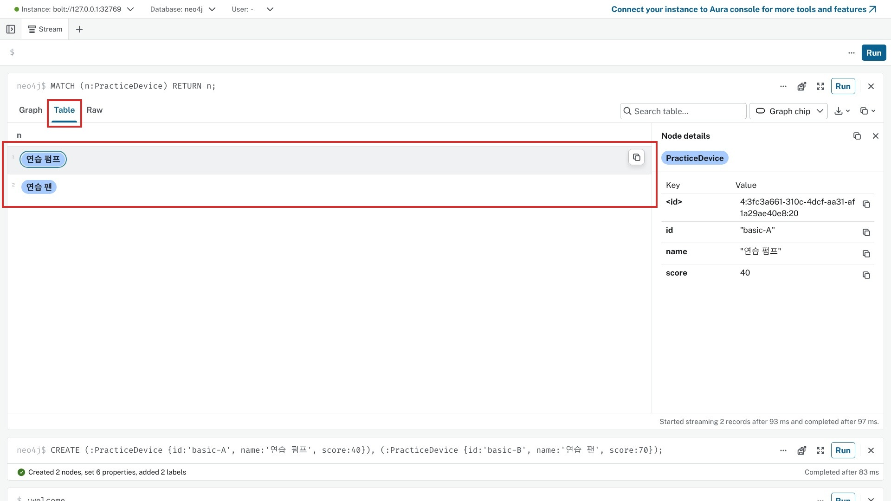
Table로 바꾼 두 행짜리 표 · 누르면 크게 보기이번에는 노드 대신 속성 값만 받습니다. AS 뒤 낱말이 표의 열 이름이 되고, ORDER BY가 늘어놓는 차례를 정합니다.
Neo4j Browser 입력 칸
MATCH (n:PracticeDevice)
RETURN n.name AS 이름, n.score AS 점수
ORDER BY 점수;
표만 나옵니다. 이름 · 점수 열에 연습 펌프 40, 연습 팬 70 차례입니다.
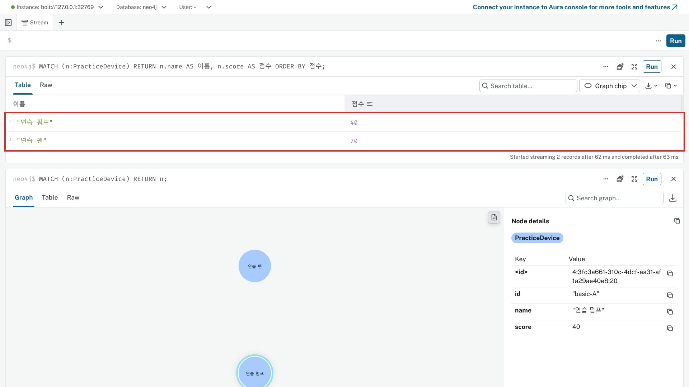
이름 · 점수 열의 두 행 · 누르면 크게 보기04 조건 더하기: WHERE
WHERE로 점수가 50 이상인 노드만 찾습니다.
Neo4j Browser 입력 칸
MATCH (n:PracticeDevice)
WHERE n.score >= 50
RETURN n;
연습 팬 하나만 나옵니다. 연습 펌프는 이번 결과에서 빠졌을 뿐 DB에는 남아 있습니다.
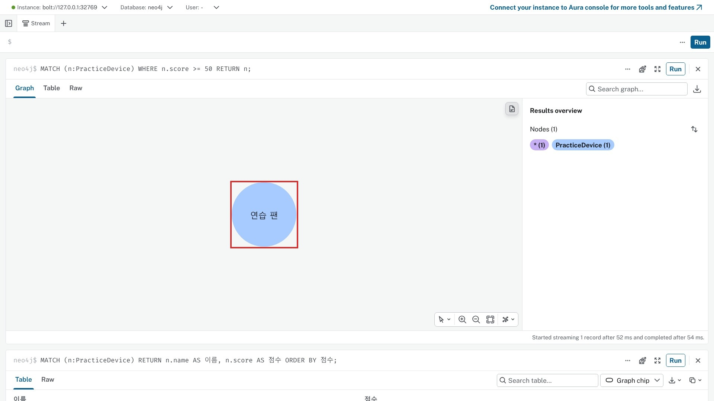
WHERE 결과: 연습 팬 하나 · 누르면 크게 보기05 있으면 찾고 없으면 만들기: MERGE · SET, 관계 잇기
펌프에 달 센서를 만듭니다. MERGE는 적은 패턴이 있으면 찾고, 없을 때만 만듭니다. 괄호 안에는 이 센서만 가리키는 아이디만 적고, 이름과 단위는 SET 줄에 적었습니다.
Neo4j Browser 입력 칸
MERGE (s:PracticeSensor {id:'basic-S1'})
SET s.name = '연습 온도 센서', s.unit = '℃'
RETURN s;
연습 온도 센서 원 하나가 나오고, 아래 글에 Created 1 node가 있습니다. 없던 센서라 만들었습니다.
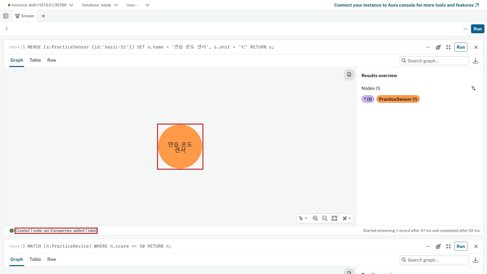
첫 MERGE 결과와 아래 글 Created 1 node · 누르면 크게 보기같은 쿼리를 한 번 더 돌립니다.
Neo4j Browser 입력 칸
MERGE (s:PracticeSensor {id:'basic-S1'})
SET s.name = '연습 온도 센서', s.unit = '℃'
RETURN s;
아래 글이 Set 2 properties뿐이고 Created가 없습니다. 이미 있는 센서를 찾기만 했습니다.
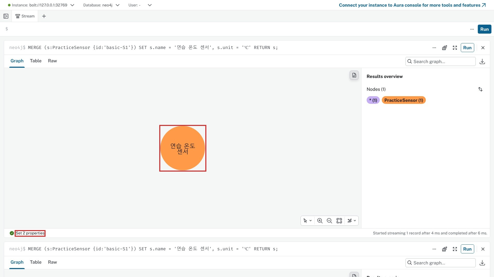
같은 MERGE를 다시 돌린 결과: Set 2 properties · 누르면 크게 보기펌프와 센서를 아이디로 하나씩 찾아 MONITORED_BY 관계로 잇습니다. 관계 이름은 HAS_COMPONENT처럼 영어 대문자와 밑줄로 적습니다.
Neo4j Browser 입력 칸
MATCH (p:PracticeDevice {id:'basic-A'})
MATCH (s:PracticeSensor {id:'basic-S1'})
MERGE (p)-[r:MONITORED_BY]->(s)
RETURN p, r, s;
펌프에서 센서로 가는 화살표가 하나 생기고, 선 위에 MONITORED_BY가 적혀 있습니다.
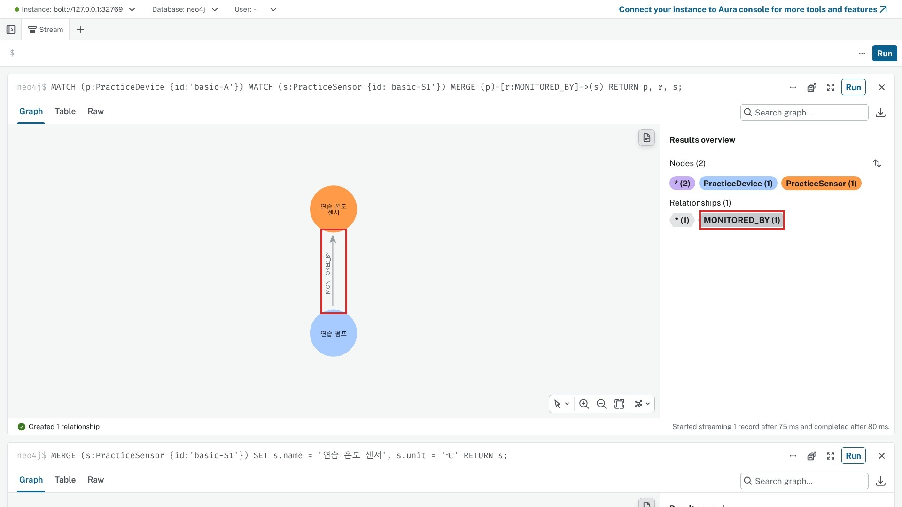
펌프에서 센서로 가는 MONITORED_BY 화살표 · 누르면 크게 보기06 속성 고치기: SET
펌프에서 MONITORED_BY를 건너 닿는 센서를 찾아 이름을 연습 유온 센서로 고칩니다.
Neo4j Browser 입력 칸
MATCH (p:PracticeDevice {id:'basic-A'})-[r:MONITORED_BY]->(s:PracticeSensor {id:'basic-S1'})
SET s.name = '연습 유온 센서'
RETURN p, r, s;
바뀐 센서 원을 눌러 오른쪽 속성을 봅니다.
name만 연습 유온 센서로 바뀌고 id basic-S1, unit ℃는 그대로입니다. 펌프와 이은 선도 남아 있습니다.
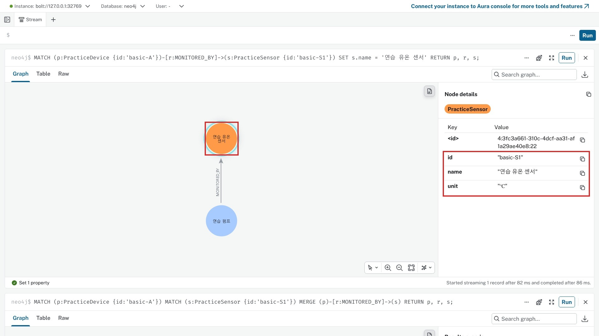
이름이 바뀐 센서와 오른쪽 속성 · 누르면 크게 보기07 지우고 다시 찾기: DETACH DELETE · DELETE
지운 것은 되돌릴 수 없으니, 맨 위 주소의 끝 숫자가 예제 DB의 숫자인지 한 번 더 보고 시작합니다.
펌프는 센서와 관계로 이어져 있어 DELETE만으로는 지워지지 않습니다. DETACH DELETE는 붙은 관계를 떼어 함께 지웁니다.
Neo4j Browser 입력 칸
MATCH (p:PracticeDevice {id:'basic-A'})
DETACH DELETE p;
Deleted 1 node, deleted 1 relationship이 나옵니다.
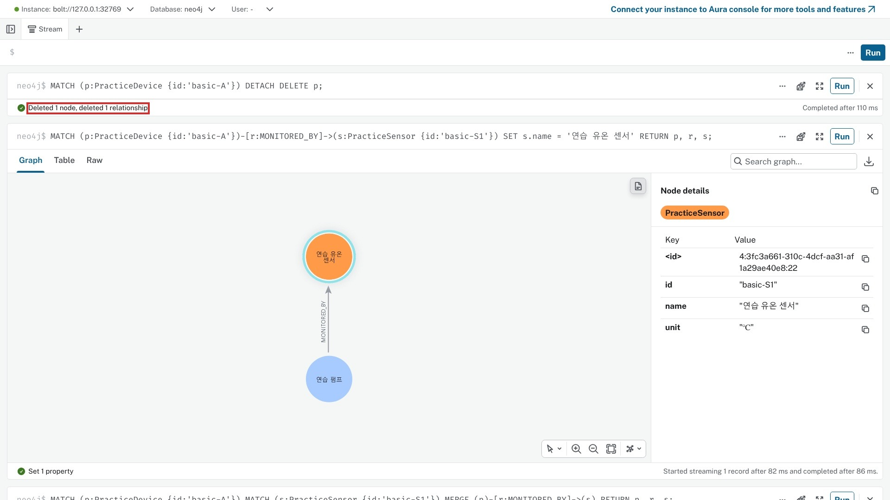
Deleted 1 node, deleted 1 relationship · 누르면 크게 보기무엇이 남았는지 다시 찾습니다. 레이블 사이의 세로줄은 「또는」입니다.
Neo4j Browser 입력 칸
MATCH (n:PracticeDevice|PracticeSensor)
RETURN n;
연습 팬과 연습 유온 센서만 남고 선은 없습니다.
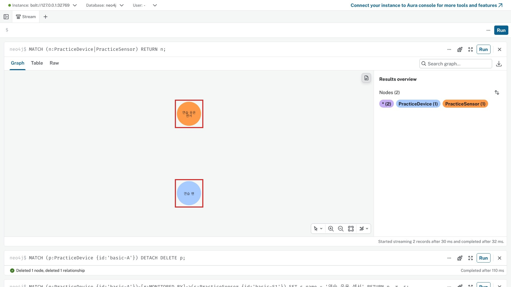
펌프를 지운 뒤 남은 둘 · 누르면 크게 보기남은 둘은 관계가 없어 DELETE로 지워집니다.
Neo4j Browser 입력 칸
MATCH (n:PracticeDevice|PracticeSensor)
DELETE n;
Deleted 2 nodes가 나옵니다.
count로 몇 개 남았는지 셉니다.
Neo4j Browser 입력 칸
MATCH (n:PracticeDevice|PracticeSensor)
RETURN count(n) AS 남은수;
남은수 0이 나옵니다. 아래에 아직 보이는 원은 지우기 전에 돌린 결과가 남은 것이라 지금 DB와는 상관없습니다.
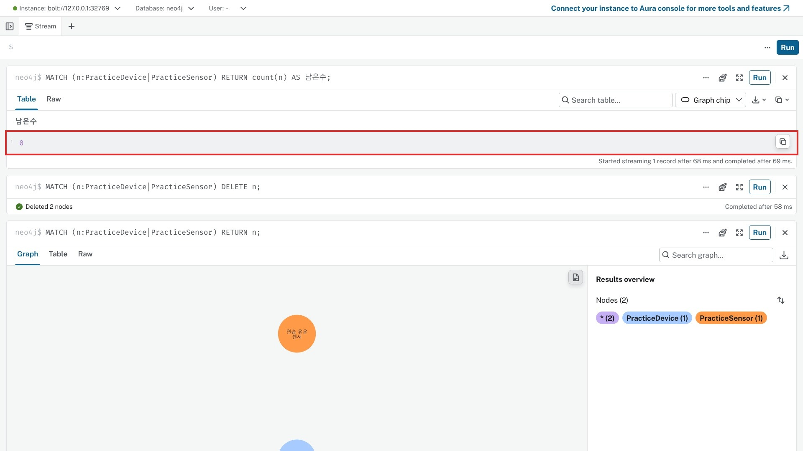
남은수 0 · 누르면 크게 보기08 설비 데이터를 레이블마다 세기
이제 처음부터 들어 있던 설비 데이터를 봅니다. 레이블이 같은 것끼리 묶어 셉니다.
Neo4j Browser 입력 칸
MATCH (n)
RETURN labels(n) AS 레이블, count(n) AS 개수
ORDER BY 개수 DESC;
Component 6, Sensor 5, StateVariable 5, Part 3, Asset 1의 다섯 행입니다. 더하면 20으로, 처음에 본 노드 수와 같습니다.
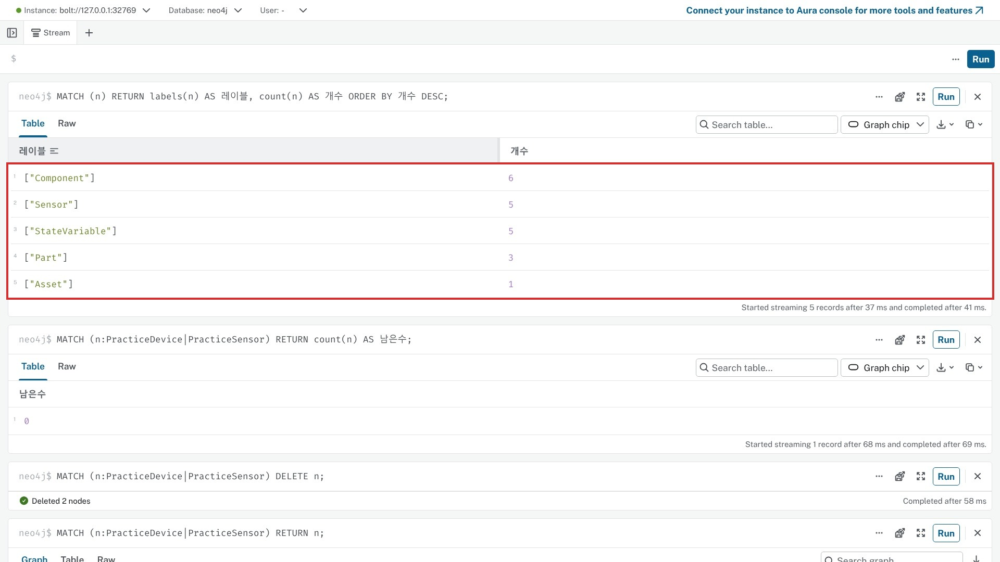
레이블마다 센 다섯 행 · 누르면 크게 보기09 관계를 한 번 건너기: 한 단계
설비 HYD-01에서 HAS_COMPONENT를 한 번 건너 구성 요소의 이름을 받습니다.
Neo4j Browser 입력 칸
MATCH (:Asset {code:'HYD-01'})-[:HAS_COMPONENT]->(c:Component)
RETURN c.name AS 구성요소;
작동유 탱크, 구동 모터, 예비 펌프 (B), 주 펌프 (A), 쿨러 팬, 오일 쿨러의 여섯 행입니다.
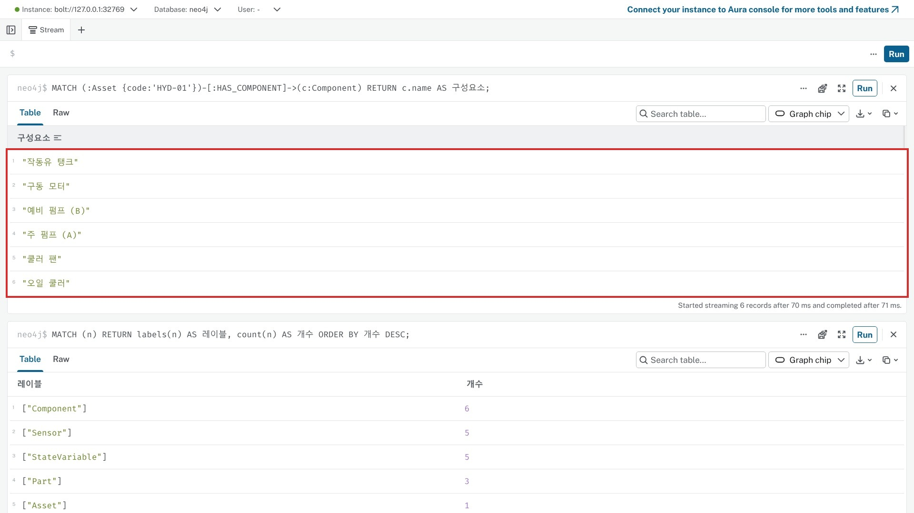
구성 요소 이름 여섯 행 · 누르면 크게 보기10 관계를 두 번 건너기: 경로
구성 요소에서 USES_PART를 한 번 더 건너 부품까지 갑니다. 맨 앞의 path = 는 길 전체를 path라는 이름으로 받는다는 뜻입니다.
Neo4j Browser 입력 칸
MATCH path = (:Asset {code:'HYD-01'})-[:HAS_COMPONENT]->(:Component)-[:USES_PART]->(:Part)
RETURN path;
설비 하나, 구성 요소 셋, 부품 셋이 이어진 그림입니다. 부품까지 이어진 구성 요소만 나와서 구성 요소가 셋입니다.
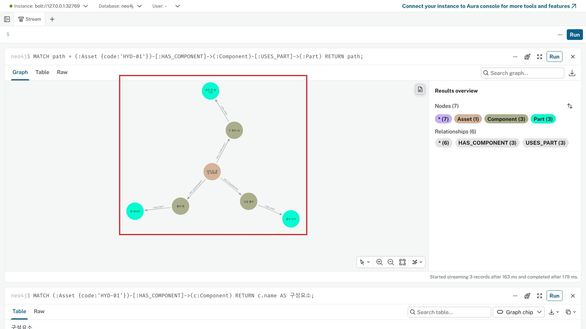
설비 · 구성 요소 셋 · 부품 셋의 경로 · 누르면 크게 보기같은 패턴에 오일 쿨러라는 조건을 걸고 부품의 이름과 품번을 받습니다.
Neo4j Browser 입력 칸
MATCH (:Asset {code:'HYD-01'})-[:HAS_COMPONENT]->(c:Component)-[:USES_PART]->(pt:Part)
WHERE c.name = '오일 쿨러'
RETURN c.name AS 구성요소, pt.name AS 부품, pt.partNo AS 품번;
오일 쿨러 · 쿨러 코어 · P-CLR-CORE 한 행입니다.
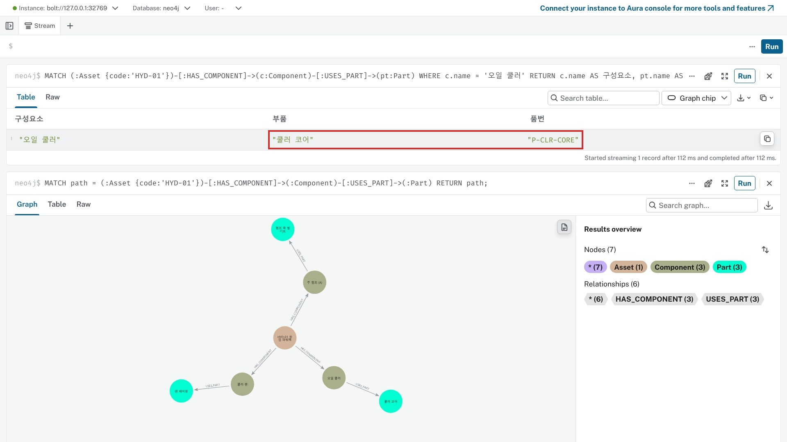
오일 쿨러의 부품과 품번 · 누르면 크게 보기11 답이 맞는지 맞춰 보기: 원래 행 · 조건 · 집계
쿼리는 조건을 잘못 적어도 오류 없이 그럴듯한 표를 내놓습니다. 그래서 나온 답을 원래 행과 맞춰 봅니다. 먼저 구성 요소에 MONITORED_BY로 이어진 센서를 조건 없이 받습니다.
Neo4j Browser 입력 칸
MATCH (:Asset {code:'HYD-01'})-[:HAS_COMPONENT]->(c:Component)-[:MONITORED_BY]->(s:Sensor)
RETURN c.name AS 구성요소, s.name AS 센서, s.virtual AS 가상
ORDER BY 구성요소, 센서;
다섯 행이 나오고, 맨 위 오일 쿨러 · 냉각 효율 (가상)만 가상이 TRUE입니다. 이 다섯 행이 원래 행입니다.
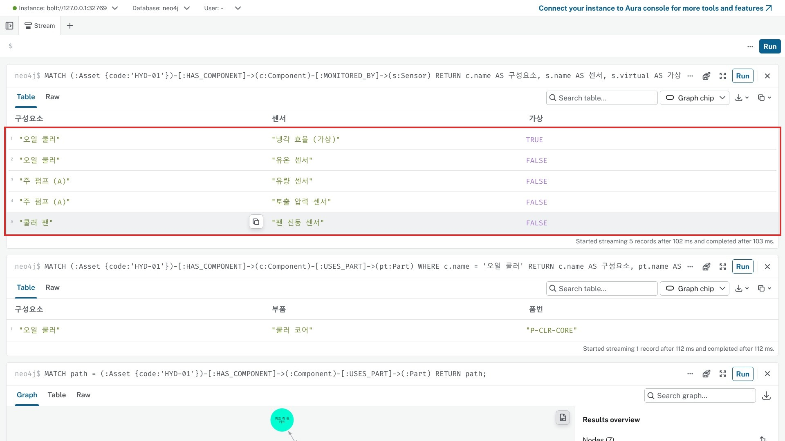
원래 행 다섯, 첫 행만 TRUE · 누르면 크게 보기다음 칸을 돌리기 전에 답을 정해 둡니다. 가상이 false인 것만 받으면 첫 행이 빠지고 네 행이 남아야 합니다.
Neo4j Browser 입력 칸
MATCH (:Asset {code:'HYD-01'})-[:HAS_COMPONENT]->(c:Component)-[:MONITORED_BY]->(s:Sensor)
WHERE s.virtual = false
RETURN c.name AS 구성요소, s.name AS 센서, s.virtual AS 가상
ORDER BY 구성요소, 센서;
네 행이 나오고 가상 열이 모두 FALSE입니다. 정해 둔 답과 같습니다.
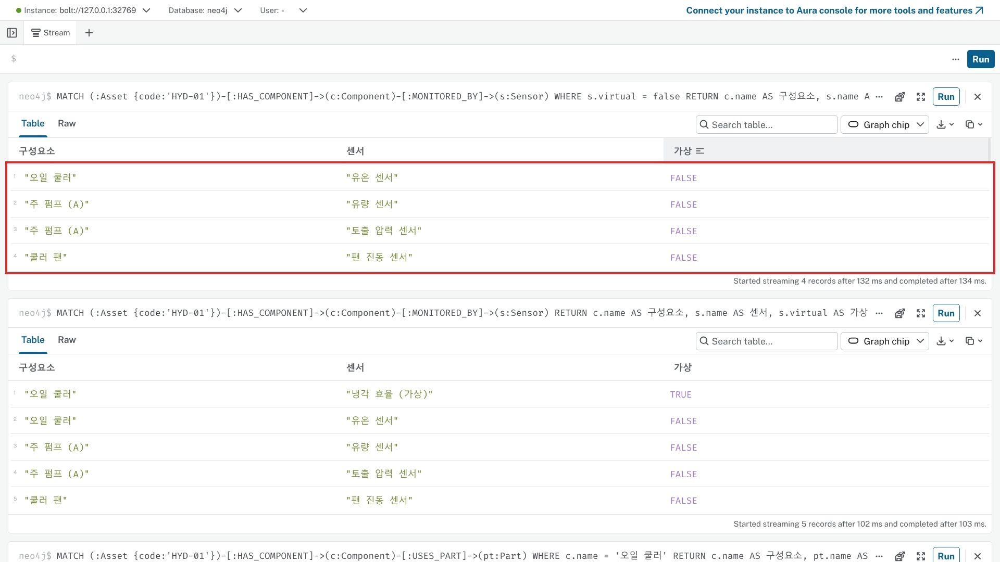
조건을 건 네 행 · 누르면 크게 보기이번에는 구성 요소마다 센서를 셉니다. count는 묶음마다 수를 세고, collect는 그 묶음의 센서 이름을 한 줄로 모읍니다.
Neo4j Browser 입력 칸
MATCH (:Asset {code:'HYD-01'})-[:HAS_COMPONENT]->(c:Component)-[:MONITORED_BY]->(s:Sensor)
RETURN c.name AS 구성요소, count(s) AS 센서수, collect(s.name) AS 센서목록
ORDER BY 센서수 DESC, 구성요소;
오일 쿨러 2, 주 펌프 (A) 2, 쿨러 팬 1이고, 오른쪽 목록의 이름 수가 왼쪽 숫자와 같습니다. 오일 쿨러의 2에는 계산값인 냉각 효율 (가상)이 들어 있어, 실제로 달린 센서만 세려면 WHERE로 가상을 뺀 뒤에 셉니다.
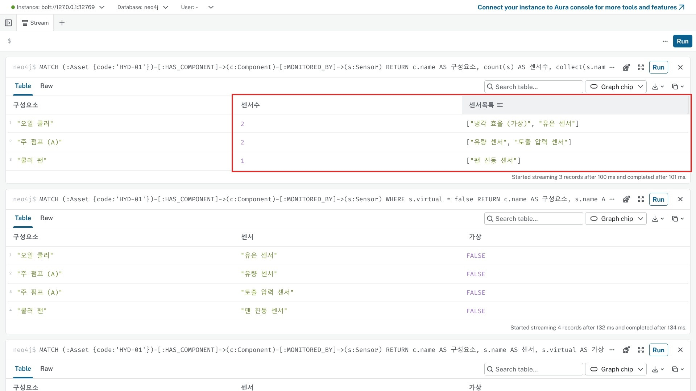
구성 요소마다 센서 수와 센서 목록 · 누르면 크게 보기